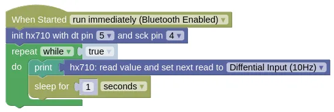

Analog-to-Digital (HX710)

The HX710 is a Analog-to-Digital converter, commonly used with load cells for weight / force measurement, or in pressure sensors (...shown above).
Pins

| Pin | Description |
|---|---|
| VCC | Power for the sensor. Connect to 3V3. If your device is on USB power, you can also use VIN. |
| GND | Ground pin. This should be connected to the GND pin on the ESP32. |
| OUT | Data pin. This should be connected to an input capable pin on the ESP32 (default pin 5). |
| SCK | Serial Clock. This should be connected to an output capable pin on the ESP32 (default pin 4). |
Wiring

Code
This code will print out measured value every 1 second. It return a unitless value, so calibration is required if you want to measure weight.
During each read, you can set the mode of the next read.
- 10Hz Highest Accuracy.
- 40Hz Lower Accuracy, but respond faster to changes.
- Temperature / Analog Voltage The HX710A contains a temperature sensor, while the HX710B contains an analog voltage sensor. You can read these in temperature / voltage mode.
Blocks

Python
import hx710
import time
hx710_device = hx710.HX710(5, 4)
while True:
print(hx710_device.read(hx710.DIFF_10HZ))
time.sleep(1)
Results
You should see in the monitor a value within the range −8,388,608 to 8,388,607 printed every second.
To convert this value to a pressure reading, you'll need to calibrate it against a known pressure.
class HX710 - read HX710 analog-to-digital converter
Constructors
hx710.HX710(dt_pin, sck_pin)
Creates a HX710 object.
The arguments are:
-
dt_pinAn integer specifying the microcontroller pin connected to DT. -
sck_pinAn integer specifying the microcontroller pin connected to SCK.
Returns a HX710 object.
Methods
HX710.read(next)
Reads from the HX710.
The arguments are:
-
nextThe next read mode, which can be one of the following:-
hx710.DIFF_10HZSet the next read to 10Hz mode. -
hx710.DIFF_40HZSet the next read to 40Hz mode. -
hx710.TEMPERATURE_AVOLTAGESet pin to temperature / voltage mode.
-
Returns an integer within the range −8,388,608 to 8,388,607 representing the unitless reading value.